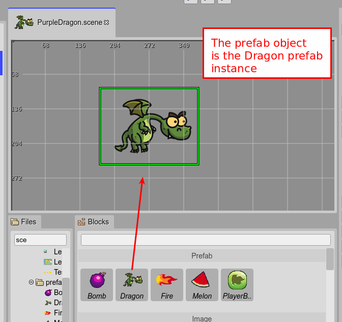
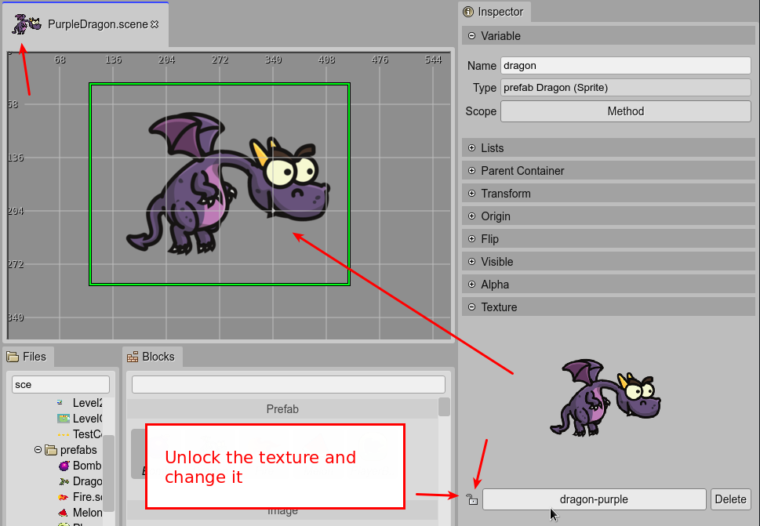
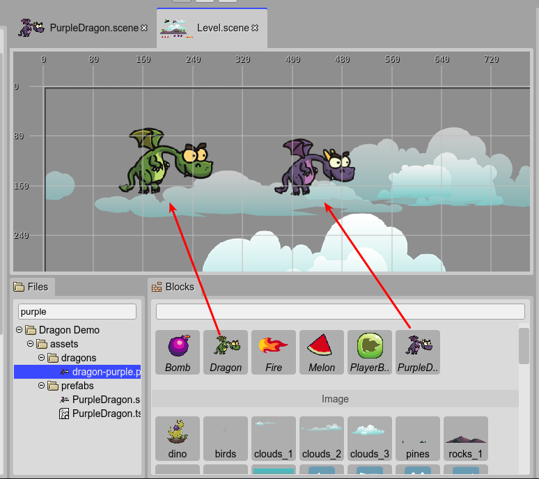
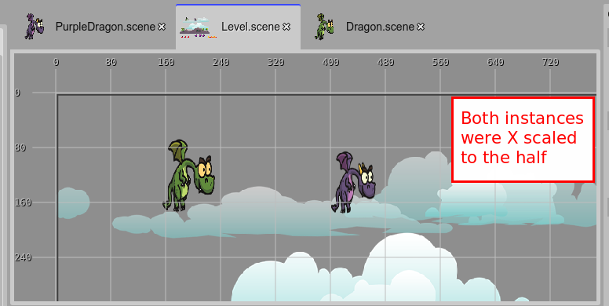

Prefab variants
A prefab variant is a prefab that extends other prefab. This is a concept similar to the Unity Engine prefab variants so we use the same name. However, like everything else in the Scene Editor, the best way to understand the prefab variant is looking into the generated code. Then you realize that a variant of a prefab is a sub-class of the prefab class.
A prefab variant inherits the properties and values of the base prefab, however, you can unlock the properties and modify them.
Learn more about unlock a prefab property.
You can create a prefab variant very easy, the only thing you need is to use a prefab as the prefab object of the prefab file.
Let’s say we want to create a purple-skinned prefab variant of the Dragon prefab. These are the steps:
Create a new prefab file, named PurpleDragon. Learn how to create a prefab file.
Drop the Dragon prefab on the scene. This creates a prefab instance that is the prefab object of the file.
Unlock the texture property of the object and change it to the purple dragon texture. Save the file.
Open the Level scene file, and look in the Blocks view there are the Dragon prefab and the PurpleDragon prefab. Drop the PurpleDragon prefab on the scene. It will create a new, purple, prefab instance.
But you want to reduce the size of both dragons. To do this, you change the scale of the X-axis of the Dragon prefab. It will affect both instances, the Dragon and PurpleDragon instances, because the PurpleDragon is a variant of the now scaled Dragon prefab.

Warning
A common error when making a prefab variant is to load the script files in the Asset Pack Editor, using the Script file type. It can cause a “missing class” error at the execution of the game. The problem is that the scripts files are loaded and executed in any order. The solution is to add the scripts using the Scripts file type of the Asset Pack Editor. It allows to set the execution order of the scripts: the prefab script should be executed before the prefab variant script. However, what we recommend for large projects is using building tools lie TypeScript or WebpackJS.